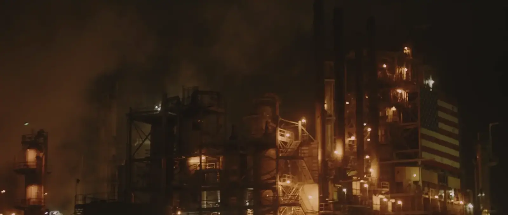
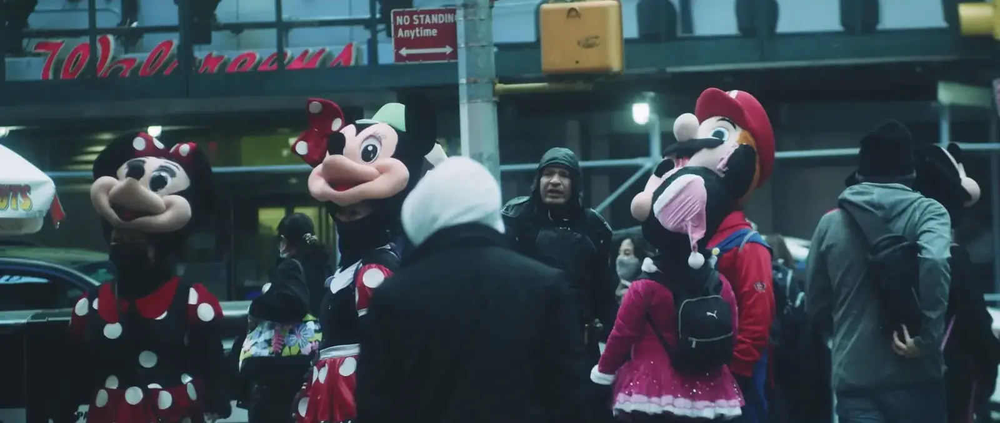
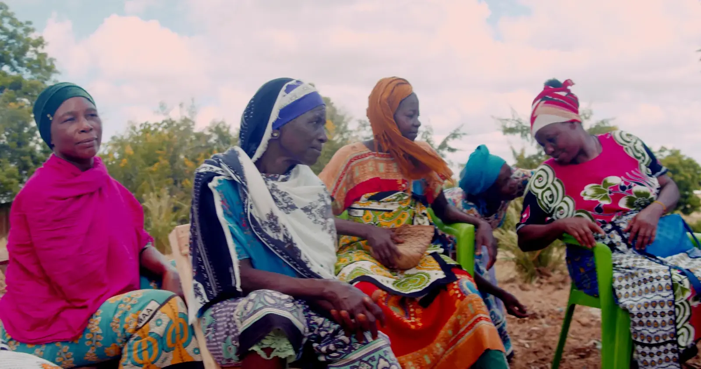
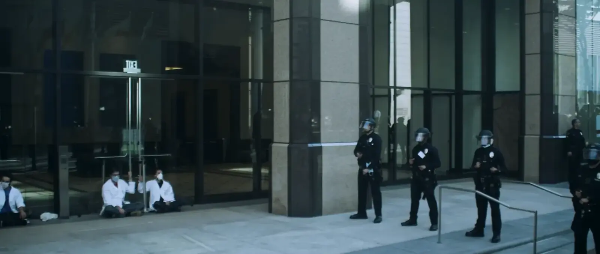

The systems we built to serve humanity have become systems humanity serves, rewarding extraction over regeneration, spectacle over substance, and the accumulation of wealth over the creation of actual value.
Take back yours to change the world.
The old story is ending.

The systems we built to serve humanity have become systems humanity serves, rewarding extraction over regeneration, spectacle over substance, and the accumulation of wealth over the creation of actual value.
We live in an economy where fortunes can be made from speculation, attention and promises about futures that may never arrive, while the systems sustaining life are pushed toward collapse.




When everything fake becomes infinite,
everything real becomes priceless.

All over the world, people are already carrying real solutions, building things that matter, and imagining futures worth living in.
The ones destroying the world know something most of us forgot.

It does, because whoever controls the story controls what people believe is possible, and what people believe is possible is the only thing that has ever determined what actually happens.